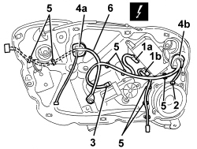

5505B10 FRONT DOOR WIRING (ONE), LEFT OR RIGHT - R.R. WITH WATER GUARD OR FRAME DETACHED
- Path
- Procedures > 55 ELECTRICAL EQUIPMENT > 5505 INSTRUMENT/GAUGE ELECTRICAL CIRCUITS > 5505B DOOR, BOOT AND BONNET WIRING > 5505B10 FRONT DOOR WIRING (ONE), LEFT OR RIGHT - R.R. WITH WATER GUARD OR FRAME DETACHED
- Kind
- repair procedure (removal / refitting; the operation number is the code)
- Applies to
- all engines; all production periods
- Interactive page
- https://sloeber94.github.io/elrnDB/alfa/159/en/#/939010979
Applies to: all engines; all production periods
 Removing
Removing
 Refitting
RefittingOp. 7005D24 FRONT DOOR WINDOW REAR GUIDE - R R
1. Disconnect the door control unit electrical connections (1a-b-c, 1d).
Description | Component |
|---|---|
DRIVER'S DOOR CONTROL UNIT (NPG) | |
PASSENGER SIDE DOOR JUNCTION UNIT (NPP) |
2. Disconnect the electrical connection for the speaker.
Description | Component |
|---|---|
SPEAKER IN LEFT FRONT DOOR | |
SPEAKER IN RIGHT FRONT DOOR |
3. Disconnect the electrical connection for the window opening motor.
Description | Component |
|---|---|
LEFT FRONT ELECTRIC WINDOW MOTOR | |
RIGHT FRONT ELECTRIC WINDOW MOTOR |
4. Prise bulkhead coupling seals (4a and 3b) from the chassis.
5. Release the wiring retainers from the chassis.
6. Recover the wiring by withdrawing from the upper part.

Applies to: all engines; all production periods
Refitting
Removing- Check that the wiring is not damaged and that the individual conducts are correctly fastened to the connections.
- If necessary, carry out continuity tests.
- Position the wiring and attach the retainers.
- Fit the bulkhead coupling seals to the chassis.
- Connect the electrical connections.
Topics linked from this page (8)
- 7005D24 FRONT DOOR WINDOW REAR GUIDE - R R
- 7005N20 FRONT SIDE DOOR LOCK MOTOR/CATCH ASSEMBLY, LEFT OR RIGHT - R.R WITH DOOR PANEL AND SUPPORT FRAME REMOVED
- M066 DRIVER'S DOOR CONTROL UNIT (NPG)
- M067 PASSENGER DOOR CONTROL UNIT (NPP)
- N060 DRIVER'S FRONT ELECTRIC WINDOW MOTOR
- N061 RIGHT FRONT ELECTRIC WINDOW MOTOR
- P035 SPEAKER ON FRONT DOOR LEFT
- P036 SPEAKER ON PASSENGER FRONT DOOR